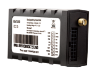

Трекер GPS PT-718 (для дітей та похилих людей) - портативний пристрій, який передбачений для відстеження людини або транспорту.
Для користування потрібно лише встановити Sim-карту будь якого оператора та підключити пакет інтернет послуг. Потім налаштувати на мобільному пристрої обо компьютер спеціальний додаток який іде в комплекті с трекером. І відстежуйте місце знаходження того чи іншого авто чи людини у якого встановленно трекер
Ціна комплекта: 2100 грн
Автомобільний GPS-трекер GV320 використовується для відстеження транспортних засобів. Особливості: надчутливий GPS-приймач, швидкий час запуску, Два діапазону частот GSM, цифровий/аналоговий вивід, підтримка передачі даних про місце знаходження трекера GPRS/SMS, як по запросу так і по заданому інтервалу часу запрос присилається в автоматичному режимі, підтримка гео позиції, вмонтовано 3D датчик руху для економії енергії і визначення схеми маршруту, підтримує резервну батарею. «Чорний ящик» (при зникненні GPRS) на 3000 звітів (160 байт). Підтримка GARMIN FMI.


 Вконтакте
Вконтакте